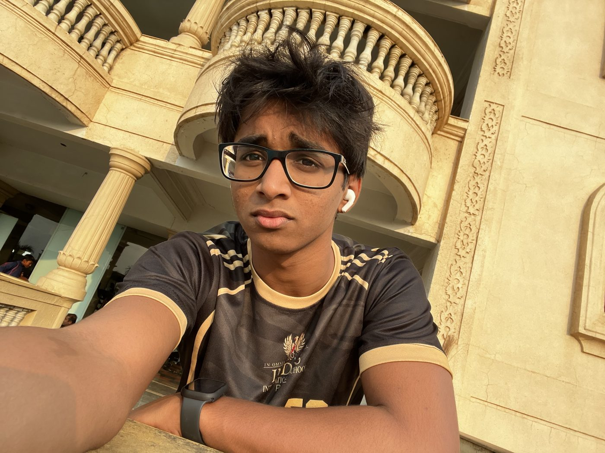
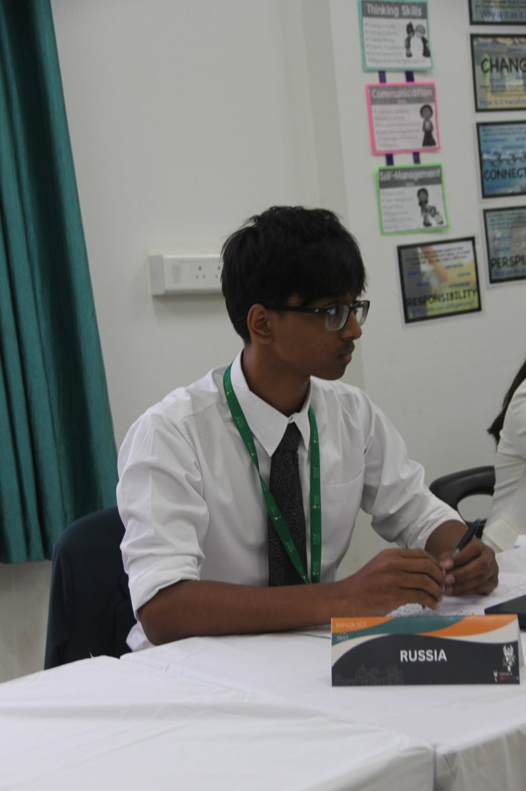
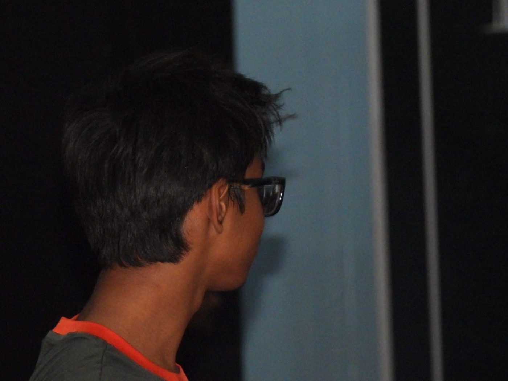
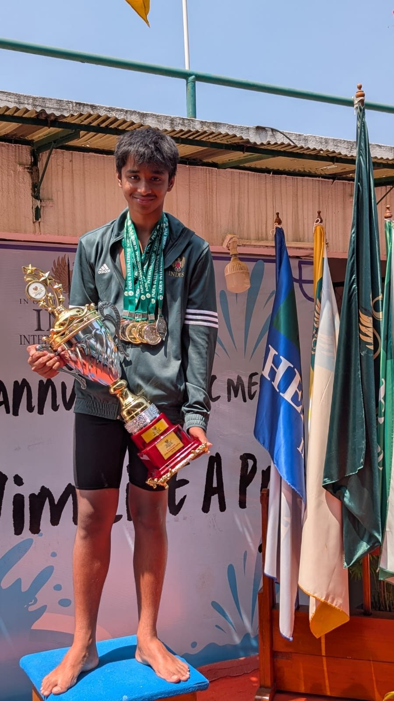

IISP MUN
Best Delegate
Top delegate in committee, chosen for research, speeches and diplomacy.
Kerala, IndiaGamer, speaker, developer, leader
Fast in the water. Sharp at the table.
I started out chasing ranks in games, found my voice through declamation, then learned to build software and lead the people building it with me. This is that story.

Competing taught me to prepare. Debating taught me to listen. Building lets me use both.
Zachary SamuelGold medals in breaststroke
Diplomacy awards at MUN and G20
Leadership roles, from co-founder to captain
Languages spoken fluently
Competitive gaming was my first training ground. It taught me to practise, lose, adjust and come back for another match.
I reached Unreal, Fortnite's highest competitive rank. It took practice, patience, quick decisions and always coming back for another match.
I moved to competitive Minecraft and reached LT3, one of the top tiers, in most game modes. Each mode had its own strategy to work out.
I got curious about the mechanics, rules and small choices that make a game feel right. So I started coding, and now I build games and software of my own.
Declamation came first: standing alone on a stage and delivering a speech as if every word were my own. I fell in love with it. That led me to Model United Nations and G20 simulations, where I represent a country, build alliances and defend positions under pressure.


IISP MUN
Top delegate in committee, chosen for research, speeches and diplomacy.
IISP MUN
Won the same top award a second time, at another IISP MUN.
IISP G20
Recognised for negotiation and policy work in a G20 summit simulation.
The curiosity that started with games turned into code. These are six things I'm building: games, learning tools and hardware, made with code and a team of AI agents.
A voice-first learning platform. Upload your study material and it becomes a teacher that explains each idea out loud, asks questions, listens to your answers and adapts. The live demo runs the real server inside your browser.
Play music with your hands. A webcam reads hand signs and turns them into synth, bass and guitar notes in real time, with sing-along songs and a song writer. No camera? Watch the bot play.
A first-person arena shooter in Unity with sliding movement, enemy AI that sees and hears you, and four waves to survive. Its page lets you try the jump physics, enemy hearing and weapon falloff.
Control firmware for a 3D-printed self-stabilising spoon for people with hand tremors. It cancels the shake but follows the hand to the mouth: −17.5 dB of tremor in simulation.
Real life as a game. Earn XP for real actions in fitness, learning and building, from level 1 to 100, with proof required before XP is awarded. The live demo runs the real server inside your browser.
An accessible website for the Adventures Beyond Barriers Foundation, a community that breaks stereotypes around disability, with a built-in text size, contrast and motion toolbar.
Building alone only goes so far. Speaking taught me to hold a room; working in teams taught me to listen to one. Now I help found, organise and run teams in tech and in sport, and I can do it in three languages.
Breaststroke is the most technical stroke, where timing counts as much as strength. These are my gold medals by distance.

On the podium at an Indus International School swim meet.
Interested in a project, a collaboration or a speaking event? My code and contact details are on GitHub.